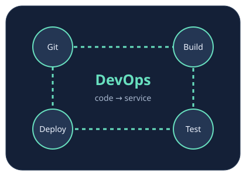

Git и совместная работа
История коммитов, rebase, разрешение конфликтов, Pull Request и зеркало.
Открыть КР №1 →Инструменты DevOps · 2026
Учебный стенд Сальникова Ильи Андреевича: контроль версий, контейнеризация и автоматизация настройки Linux-сервера.

История коммитов, rebase, разрешение конфликтов, Pull Request и зеркало.
Открыть КР №1 →Flask и Redis в Docker Compose. Nginx, сертификаты, закрытые порты и аудит.
Открыть КР №2 →GitHub Pages, SSH, rsync и Ansible: настройка сервера с помощью кода.
Открыть инфраструктуру →